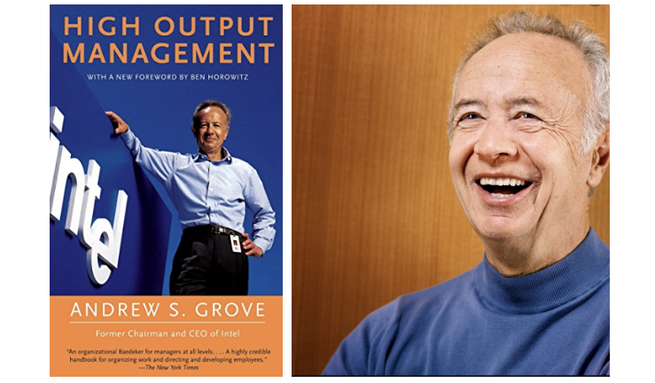

High Output Management was suggested to me as a good read for managers when I joined Dropbox. The book is written by the late Andy S. Grove who was the former chairman and CEO of Intel. Andy Grove’s thoughts on management in his book High Output Management gave him legendary status in Silicon Valley.
“It has been an honor for me to learn from Andy Grove through the years and I am excited for everyone who is new to High Output Management to join me in this experience. I know you will enjoy this marvelous book written by the best teacher I have ever know.” Ben Horowitz, 2015
Even though the book is written with a manager at a tech company in mind, Andy’s suggestions are definitely applicable to other professions and industries. Andy starts by discussing the impact of globalization and new communication tools on organizations and individuals. In summary, globalization and new technologies translates to:
- Anything that can be done will be done, if not by you then by someone else.
- Everything happens faster, so managers need to adopt quickly.
The outcome of globalization and faster dissemination of information creates a less predictable work place. As a manager you need to develop a stronger tolerance for disorder. This does not mean you accept disorder but you as a manager need to be ready mentally and emotionally to bring order to disorder.
“let chaos reign, then rein in chaos” A. Grove
Activities of a strong manager:
- Add value by continually looking for ways to make things truly better in your department.
- Be plugged into what is happening inside your company as well as inside your industry as whole.
- Try new ideas, new techniques, and technologies. Don’t just read about them but actually try them.
A manager’s skills and knowledge are only valuable if these skills are used to increase their people’s productivity. It is not about how smart you are or how well you know your business; it is about how your skills and knowledge translate to your team’s performance and output.
As a manager all you can do to improve your team’s performance is to motivate them better and train them better.
The Basics of Production
Even though the author uses serving breakfast consisting of a 3 minute boiled egg, a piece of toast and a hot cup of coffee to teach key concepts of building a production system, he also provides other examples (building a compiler, hiring college graduates, training a sales force) to drive these concepts home.
The Limiting step is the step in the production system that takes the longest time. Preparing the egg is the limiting step in the breakfast example. The key idea is to construct a production flow by starting with the longest (or most difficult, most sensitive) step and working your way back.
When recruiting college graduates for your company, the in-house interview is the limiting step because it is the most expensive step in the process (students need to travel to the headquarters, many employees will dedicate hours interviewing the candidates.)
Fundamental Types Of Production Operations:
- Process -physically or chemically change the material
- Assembly - putting components together to make a new entity
- Testing - examination of characteristics
High Output Management - Fundamental Types Of Production Operations
In summary: Breakfast preparation, college recruiting, and compiler design are very different from one another, but all of them require a similar flow of activity to produce a specific output.
Adding Value:
All production flows have a basic characteristic: material becomes more valuable as it moves through the process. Boiled egg is more valuable than raw, fully assembled breakfast is more valuable than its constituent parts, and finally, breakfast placed in front of a customer is more valuable still. Similarly, a finished compiler is more valuable than the constituent parts of semantic analysis, and code generation.
We should always try to detect and fix any problem in a production process at the lowest-value stage possible. For example, if we can decide that we don’t want a college candidate at the time of the campus interview rather than during the course of an on-site visit with the company, we save the cost of the trip and the time of both the candidate and the interviewers.
Managing A Production Operation
To run the operation well, you will need a set of good indicators, or measurements. The number of possible indicators are limitless, but for any set of them to be useful, you have to focus each indicator on specific operational goals. Put another way, which five pieces of information would you want to look at each day, immediately upon arriving to your office?
Because indicators direct one’s activities, you should guard against overreacting by pairing indicators so that together both effect and counter-effect are measured. Tracking inventory levels and the incidence of inventory shortages would be a good pair. You want to make sure you don’t have more than necessary inventory in stock but you also don’t want to run out of raw material. Measuring the completion date of each milestone in a compiler project and pairing that with the functionality it provides is another good plan.
A genuinely effective indicator will cover the output of the work unit and not simply the activity involved. You measure a sales person by the orders (output) they get not by the calls they make (activity).
Other criterion for a good indicator is that what you measure should be a physical, countable thing. These indicators are paired with ones that should stress the quality of work.
The Black Box
We can think of the breakfast factory as if it were a “black-box”:
High Output Management - The Black Box
In general, we can represent any activity that resembles a production process in a simple fashion as a black-box.
We can draw a black box to represent college candidate recruiting, where the input is the applicants on campus and the output is college graduates who have accepted employment offers. The labor is the work of the employees.
High Output Management - Examples of Input , Labor and Output
Leading indicators give you one way to look inside the black box by showing you in advance what the future might look like.
In the work of the creative professions, it becomes very difficult to distinguish between output and activity. Stressing output is the key to improving productivity, while looking to increase activity can result in just the opposite.